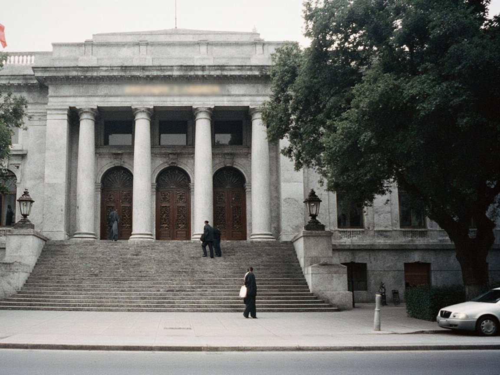
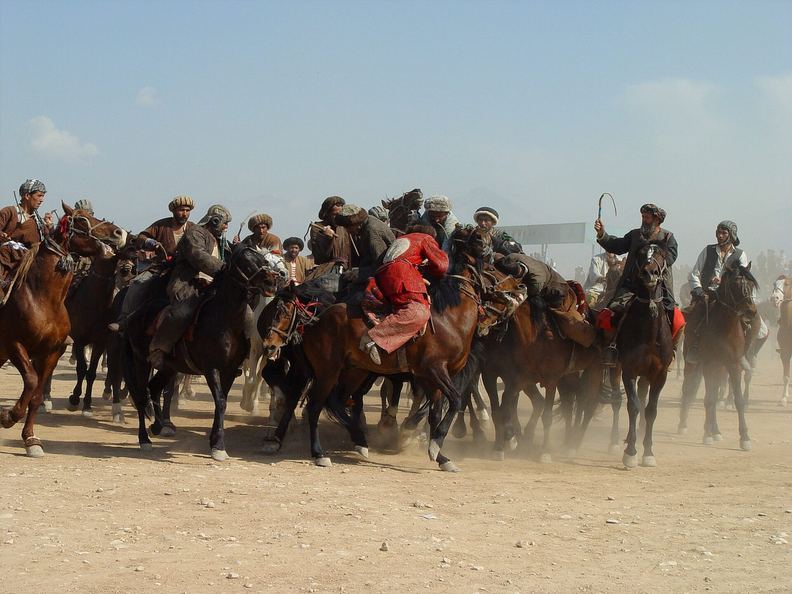

After $6.3bn exchange hack abroad, Tulparcoin's 3.59-cent quote rests on one venueCentral Asian power demand to rise 27% by 2030; Irad is not in the planningBishkek's 327 km fence is done; Irad's Kyrgyz frontier has no fence and no agreementBishkek and Tashkent talk power; Toktogul's buyers sit there, Irad does not
After $6.3bn exchange hack abroad, Tulparcoin's 3.59-cent quote rests on one venueCentral Asian power demand to rise 27% by 2030; Irad is not in the planningBishkek's 327 km fence is done; Irad's Kyrgyz frontier has no fence and no agreementBishkek and Tashkent talk power; Toktogul's buyers sit there, Irad does notLatest newsRSS


1 2 3 Older posts »
NewsView all »
CourtsView all »

BusinessView all »
Across IradView all »
CultureView all »
SportView all »
